of the Hamiltonian,
of the Hamiltonian,  a constant of motion and forces degeneracies; discrete symmetries (parity, lattice translations, time reversal) give parity selection rules, Bloch bands and Kramers doublets.
a constant of motion and forces degeneracies; discrete symmetries (parity, lattice translations, time reversal) give parity selection rules, Bloch bands and Kramers doublets.
Theorem
If then
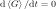
(Heisenberg equation) and, if is an energy eigenket,
is an energy eigenket, 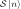
is an eigenket with the same energy (Noether 1918). If the symmetry group is non-Abelian (rotations), irreducible representations of dimension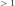
force degeneracy (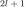
states for rotations) (Wigner 1931).Discrete symmetries
- Parity
 :
: 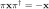
,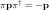
,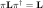
. Eigenvalues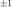
;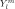
has parity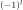
. Since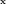
is odd,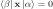
between states of the same parity: the electric-dipole rule .
. - Lattice translations
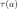
with : eigenvalues
: eigenvalues 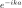
— Bloch's theorem. - Time reversal
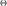
: antiunitary,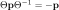
,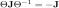
. For half-integer spin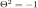
, so every level is at least doubly degenerate if is time-reversal invariant (Kramers), broken only by
is time-reversal invariant (Kramers), broken only by  .
.
Proof (Kramers)
If , i.e.
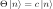
, then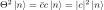
, contradicting . So and 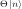
are distinct, degenerate states.Worked example
Symmetric double well: parity commutes with , so eigenstates are even
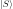
(lower) and odd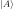
, split by tunnelling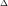
. A particle localised on the left,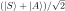
, oscillates between wells with period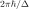
: the ammonia maser at 24 GHz.Engineering applications
Selection rules in lasers and spectroscopy, band-structure labelling of semiconductors by crystal symmetry, spin degeneracy and its lifting (Zeeman, Rashba) in spintronics, protected degeneracies in topological insulators.
Pitfall
A symmetry of does not mean each eigenstate is symmetric when there is degeneracy; one can choose a symmetric basis, but superpositions are equally valid.